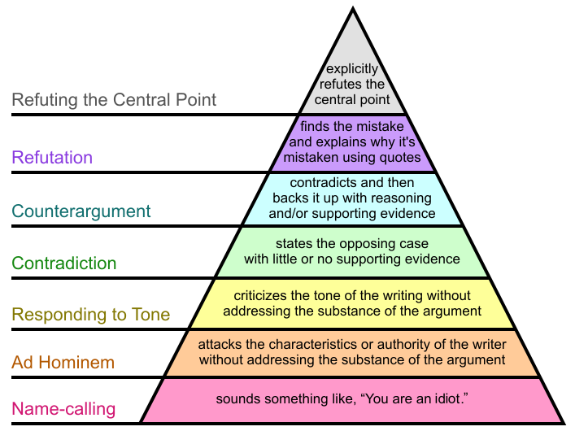

How to Disagree

The web is turning writing into a conversation. Twenty years ago, writers wrote and readers read. The web lets readers respond, and increasingly they do—in comment threads, on forums, and in their own blog posts.
Many who respond to something disagree with it. That's to be expected. Agreeing tends to motivate people less than disagreeing. And when you agree there's less to say. You could expand on something the author said, but he has probably already explored the most interesting implications. When you disagree you're entering territory he may not have explored.
The result is there's a lot more disagreeing going on, especially measured by the word. That doesn't mean people are getting angrier. The structural change in the way we communicate is enough to account for it. But though it's not anger that's driving the increase in disagreement, there's a danger that the increase in disagreement will make people angrier. Particularly online, where it's easy to say things you'd never say face to face.
If we're all going to be disagreeing more, we should be careful to do it well. What does it mean to disagree well? Most readers can tell the difference between mere name-calling and a carefully reasoned refutation, but I think it would help to put names on the intermediate stages. So here's an attempt at a disagreement hierarchy:
DH0. Name-calling.
This is the lowest form of disagreement, and probably also the most common. We've all seen comments like this:
u r a fag!!!!!!!!!!
But it's important to realize that more articulate name-calling has just as little weight. A comment like
The author is a self-important dilettante.
is really nothing more than a pretentious version of "u r a fag."
DH1. Ad Hominem.
An ad hominem attack is not quite as weak as mere name-calling. It might actually carry some weight. For example, if a senator wrote an article saying senators' salaries should be increased, one could respond:
Of course he would say that. He's a senator.
This wouldn't refute the author's argument, but it may at least be relevant to the case. It's still a very weak form of disagreement, though. If there's something wrong with the senator's argument, you should say what it is; and if there isn't, what difference does it make that he's a senator?
Saying that an author lacks the authority to write about a topic is a variant of ad hominem—and a particularly useless sort, because good ideas often come from outsiders. The question is whether the author is correct or not. If his lack of authority caused him to make mistakes, point those out. And if it didn't, it's not a problem.
DH2. Responding to Tone.
The next level up we start to see responses to the writing, rather than the writer. The lowest form of these is to disagree with the author's tone. E.g.
I can't believe the author dismisses intelligent design in such a cavalier fashion.
Though better than attacking the author, this is still a weak form of disagreement. It matters much more whether the author is wrong or right than what his tone is. Especially since tone is so hard to judge. Someone who has a chip on their shoulder about some topic might be offended by a tone that to other readers seemed neutral.
So if the worst thing you can say about something is to criticize its tone, you're not saying much. Is the author flippant, but correct? Better that than grave and wrong. And if the author is incorrect somewhere, say where.
DH3. Contradiction.
In this stage we finally get responses to what was said, rather than how or by whom. The lowest form of response to an argument is simply to state the opposing case, with little or no supporting evidence.
This is often combined with DH2 statements, as in:
I can't believe the author dismisses intelligent design in such a cavalier fashion. Intelligent design is a legitimate scientific theory.
Contradiction can sometimes have some weight. Sometimes merely seeing the opposing case stated explicitly is enough to see that it's right. But usually evidence will help.
DH4. Counterargument.
At level 4 we reach the first form of convincing disagreement: counterargument. Forms up to this point can usually be ignored as proving nothing. Counterargument might prove something. The problem is, it's hard to say exactly what.
Counterargument is contradiction plus reasoning and/or evidence. When aimed squarely at the original argument, it can be convincing. But unfortunately it's common for counterarguments to be aimed at something slightly different. More often than not, two people arguing passionately about something are actually arguing about two different things. Sometimes they even agree with one another, but are so caught up in their squabble they don't realize it.
There could be a legitimate reason for arguing against something slightly different from what the original author said: when you feel they missed the heart of the matter. But when you do that, you should say explicitly you're doing it.
DH5. Refutation.
The most convincing form of disagreement is refutation. It's also the rarest, because it's the most work. Indeed, the disagreement hierarchy forms a kind of pyramid, in the sense that the higher you go the fewer instances you find.
To refute someone you probably have to quote them. You have to find a "smoking gun," a passage in whatever you disagree with that you feel is mistaken, and then explain why it's mistaken. If you can't find an actual quote to disagree with, you may be arguing with a straw man.
While refutation generally entails quoting, quoting doesn't necessarily imply refutation. Some writers quote parts of things they disagree with to give the appearance of legitimate refutation, then follow with a response as low as DH3 or even DH0.
DH6. Refuting the Central Point.
The force of a refutation depends on what you refute. The most powerful form of disagreement is to refute someone's central point.
Even as high as DH5 we still sometimes see deliberate dishonesty, as when someone picks out minor points of an argument and refutes those. Sometimes the spirit in which this is done makes it more of a sophisticated form of ad hominem than actual refutation. For example, correcting someone's grammar, or harping on minor mistakes in names or numbers. Unless the opposing argument actually depends on such things, the only purpose of correcting them is to discredit one's opponent.
Truly refuting something requires one to refute its central point, or at least one of them. And that means one has to commit explicitly to what the central point is. So a truly effective refutation would look like:
The author's main point seems to be x. As he says:
<quotation>
But this is wrong for the following reasons...
The quotation you point out as mistaken need not be the actual statement of the author's main point. It's enough to refute something it depends upon.
What It Means
Now we have a way of classifying forms of disagreement. What good is it? One thing the disagreement hierarchy doesn't give us is a way of picking a winner. DH levels merely describe the form of a statement, not whether it's correct. A DH6 response could still be completely mistaken.
But while DH levels don't set a lower bound on the convincingness of a reply, they do set an upper bound. A DH6 response might be unconvincing, but a DH2 or lower response is always unconvincing.
The most obvious advantage of classifying the forms of disagreement is that it will help people to evaluate what they read. In particular, it will help them to see through intellectually dishonest arguments. An eloquent speaker or writer can give the impression of vanquishing an opponent merely by using forceful words. In fact that is probably the defining quality of a demagogue. By giving names to the different forms of disagreement, we give critical readers a pin for popping such balloons.
Such labels may help writers too. Most intellectual dishonesty is unintentional. Someone arguing against the tone of something he disagrees with may believe he's really saying something. Zooming out and seeing his current position on the disagreement hierarchy may inspire him to try moving up to counterargument or refutation.
But the greatest benefit of disagreeing well is not just that it will make conversations better, but that it will make the people who have them happier. If you study conversations, you find there is a lot more meanness down in DH1 than up in DH6. You don't have to be mean when you have a real point to make. In fact, you don't want to. If you have something real to say, being mean just gets in the way.
If moving up the disagreement hierarchy makes people less mean, that will make most of them happier. Most people don't really enjoy being mean; they do it because they can't help it.